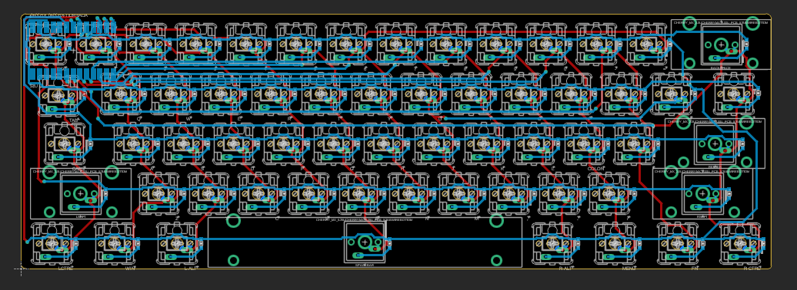
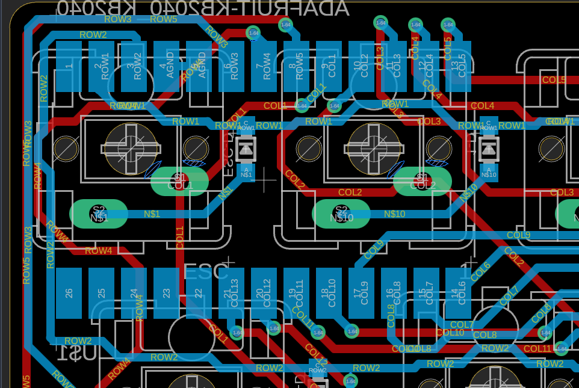
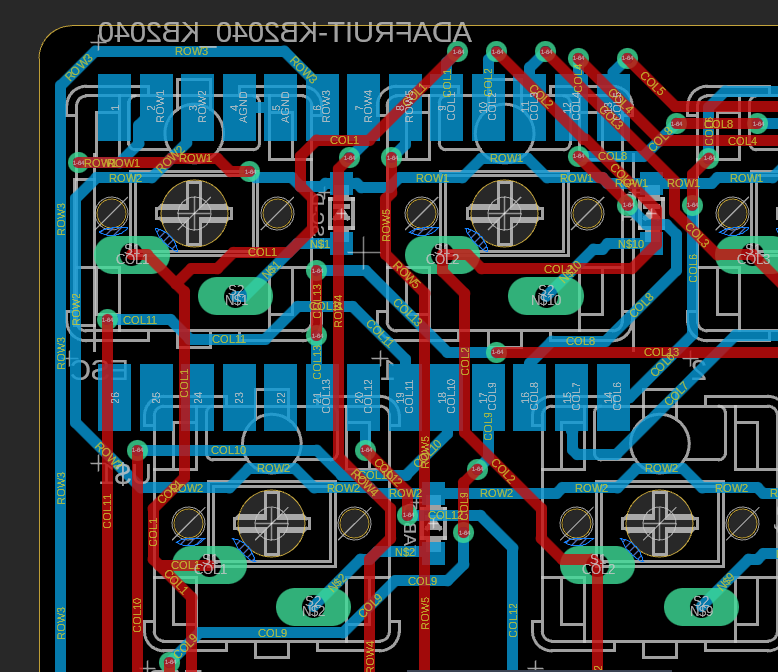
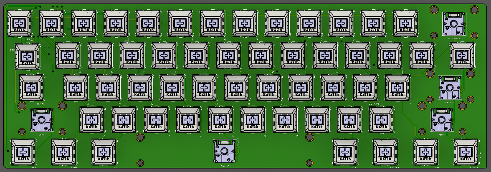
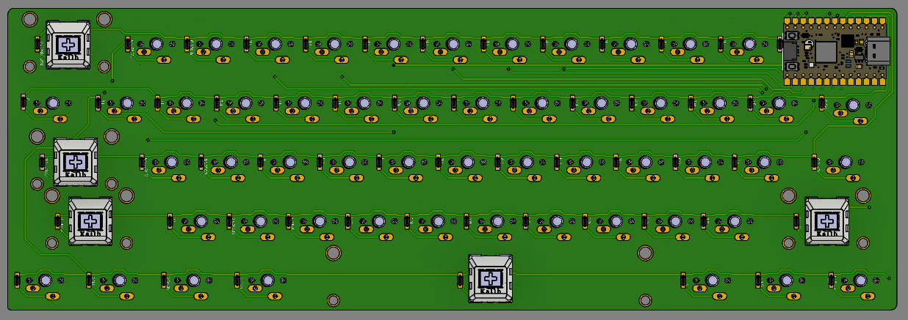
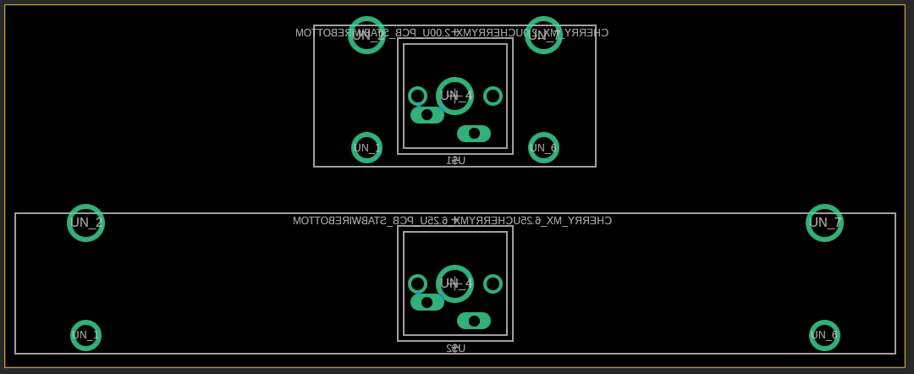
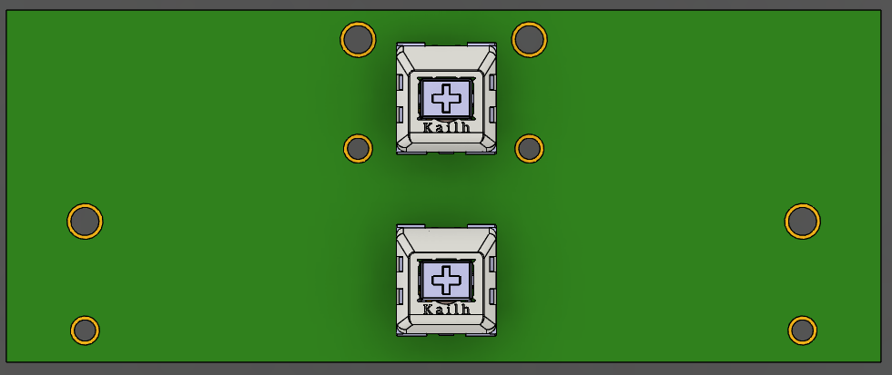
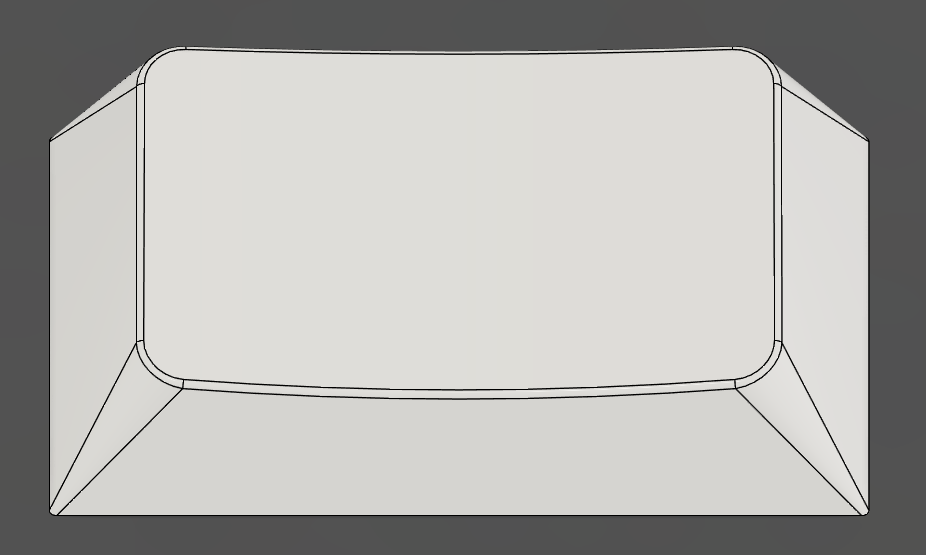
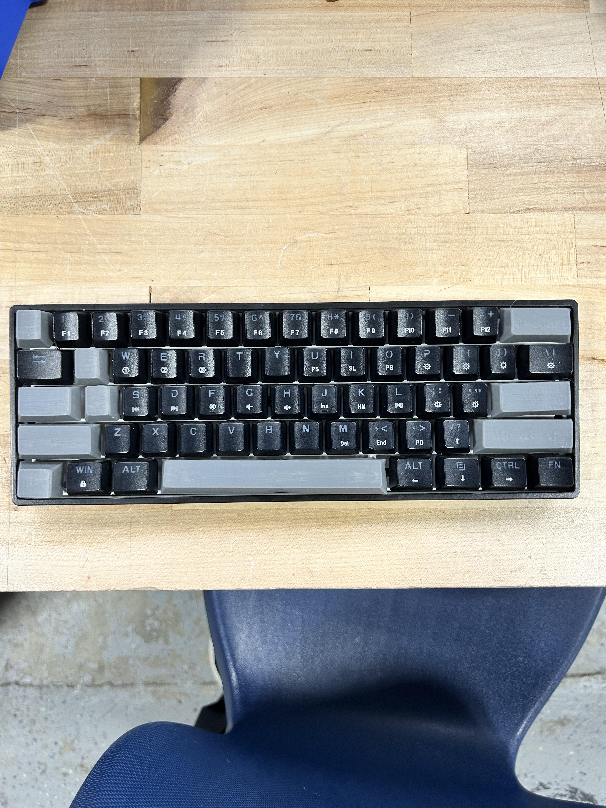
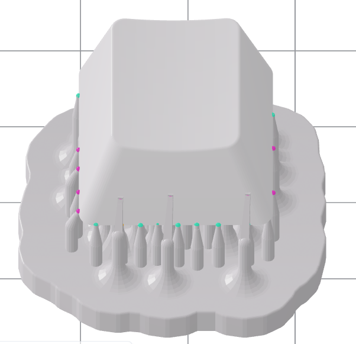

junior week dec. 11, 2025
i'm sick as of writing this (i think), so i didn't get much done on the thurs.
pcb
unwired everything and replaced the needed keys with their corresponding stabilizers, after that, i had to rewire everything again which wasn't fun.
wasn't hard, just tedious. however, i think i did a way better job with the wiring as there isn't as many via's as the first edition
this won't change anything, but it will make wiring it slightly harder because it's not on the same row it's supposed to be on

the new wiring (if you can see)

zoomed in on microcontroller area. way less via's

last week's for comparison


the keys with stabilizers were set to bottom to line up correctly with the other keys. i was too lazy to adjust the footprint
with this all done, the pcb should be ready to be shipped out. just in case, i created a very complex pcb to be cut in cardboard to test stabilizers positioning


hopefully the stabilizers arrive soon so i can test if the footprint that i stole from online works.
keycaps
so i forgot to create a tab key, so i accidently printed all the keys besides tab to test tolerances

tab key
i guess the orientation i printed it in wasn't ideal, as the tolerances came out really poorly and it wouldn't fit into the keys.
since i was also testing the look of the keycaps, i decided to just use heat to open up the cross and placed them to check.

turned out pretty well (minus the space bar which got totally destroyed when heating it up) and i was quite satisified with the look. i edited the tolerances and reprinted just one key a few times before getting the tolerances correct.
since i plan on the final keycaps being made in resin, i decided to resin print the r2 1x1 keycap just to see how it would feel in resin, and to check if the tolerances for the resin printer were similiar to the 3d printer.

it's not gonna be done today as it still needs to be washed and everything. however, i'm looking forward to seeing how my first ever resin print comes out.